パズシュワ攻略まとめ
現イベント解説(OTS ベムスター/ガンQ)
基本情報
・ピース操作で移動元の移動先との掛け合わせをすると移動元の属性になる
例えば、青必殺技玉を操作して赤必殺技に掛け合わせると青属性の合体必殺技となる
・サークルをタップした際に消去(選択される)色はピースは盤面で一番多い色が選ばれる
※同数の場合は盤面左上から→に見て最初に出てきた色となる
・必殺技玉をピッケルで壊すとターン消費せずそのターンから必殺技の効果を受けられます。
例えば、アストラの1ターン青属性の攻撃UPについてはピッケルを使用したターンとその次のターンまで
効果が及ぶので通常使用したときよりも1ターン多く恩恵が受けられます。
ベムスター編
攻略のポイント
ベムスターは青属性やロケットのダメージ補正がかなりついています
青属性ステータスをあげて攻めるのが良さそうです
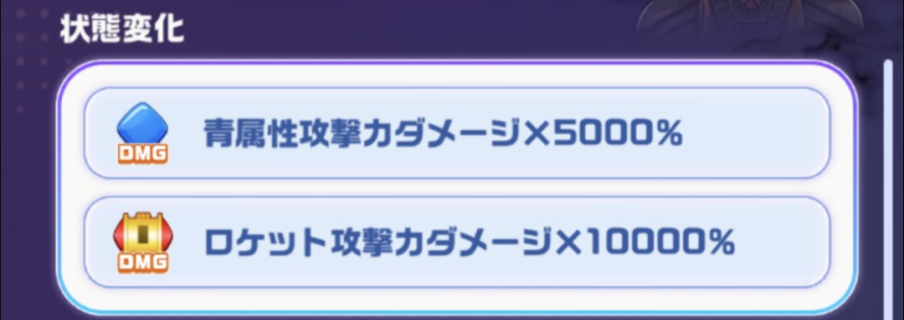
確定サークル
オススメパーティ1
キャラ
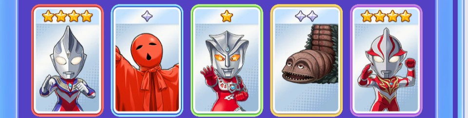
・🟥赤キャラ→ウルトラマンティガ(マルチタイプ)
・🟦青キャラ→ノーバ
・🟩緑キャラ→アストラ
・🟨黄キャラ→ツインテール
・🟪紫キャラ→ウルトラマンメビウス(バーニングブレイブ)
キャラ入れ替え候補
・ティガ→なし
・ノーバ→ツインテール
・アストラ→ブル、アグル(V2)
・ツインテール→インペライザー、シェパードン
・メビウス→必須キャラ
コア
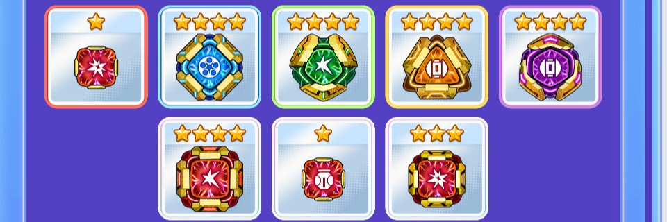
・🟥赤コア→☆1RクリティカルコアSR(赤属性UP)
・🟦青コア→☆4BサークルコアUR(青属性UP)
・🟩緑コア→☆4GアタックコアUR(緑属性UP)
・🟨黄コア→☆4YロケットコアUR(ロケットUP)
・🟪紫コア→☆4PロケットコアLR(ロケットUP)
・⬜自由枠コア→☆4RアタックコアUR(赤属性UP)
・⬜自由枠コア→☆1RナパームコアSR(赤属性UP)
・⬜自由枠コア→☆3RクリティカルコアLR(赤属性UP)
コア入れ替え候補
・🟥赤コア→赤属性UPのコア
・🟦青コア→青属性UPのコア
・🟩緑コア→ボム系のコア
・🟨黄コア→ロケットUPのコア
・🟪紫コア→ロケットUPのコア
・⬜自由枠コア→赤属性UPのコア
・⬜自由枠コア→赤属性UPのコア
・⬜自由枠コア→赤属性UPのコア
リンクカード
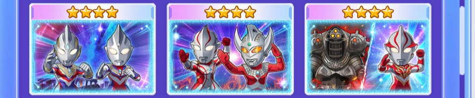
・『ウルトラマンメビウス』(メビウスVSインペライザー)
・タロウ&メビウス-光の国での教え-
・採用キャラに準じる
ウルトラメカ
・優先順位1 赤属性強化
・優先順位2 ロケット強化
・優先順位3 青属性強化
立ち回り
このパーティの戦略としては赤属性ステータスを強化して主軸となる
ウルトラマンメビウスバーニングブレイブ(以下メビウスBBと記載)のアビリティで全属性を強化して青属性で攻撃するのが目的です。
青属性に低コストのキャラクターを配置して青属性の必殺技やコンビネーションを使ってスコアを出していきます。
メビウスBBの必殺技を使用で赤属性を強化(実質全属性強化)した後に青必殺技を使ったコンビネーション技を出すとスコアが伸びます。
もし、ブルを採用した場合はブルの必殺技後の方がスコアが跳ねます。
ブルの仕様について、ブルの必殺技「味方の攻撃に青属性付与する」は全属性が数値そのままで青属性として処理されます。
敵の弱点が青属性なので必殺技使用後であれば効果中どの必殺技、ピース消しを行っても青属性で攻めることができます。
オススメパーティ2
キャラ
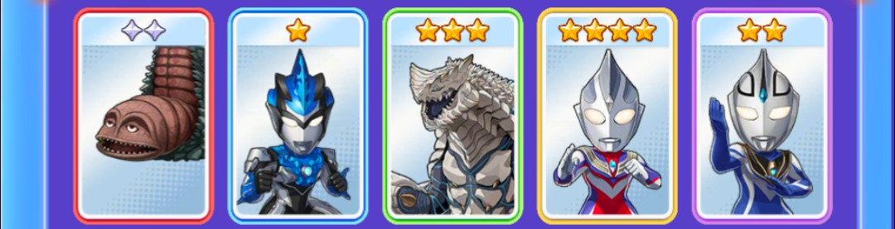
・🟥赤キャラ→ツインテール
・🟦青キャラ→ウルトラマンブル(アクア)
・🟩緑キャラ→シェパードン
・🟨黄キャラ→ウルトラマンティガ(マルチタイプ)
・🟪紫キャラ→ウルトラマンアグル(V2)
キャラ入れ替え候補
・ツインテール→シャゴン
・ウルトラマンブル→必須キャラ
・シェパードン→テラフェイザー、デスドラゴ
・ウルトラマンティガ→なし
・アグル→アストラ、オメガ(レキネスアーマー)、ゼット(ニュージェネケープ)
コア
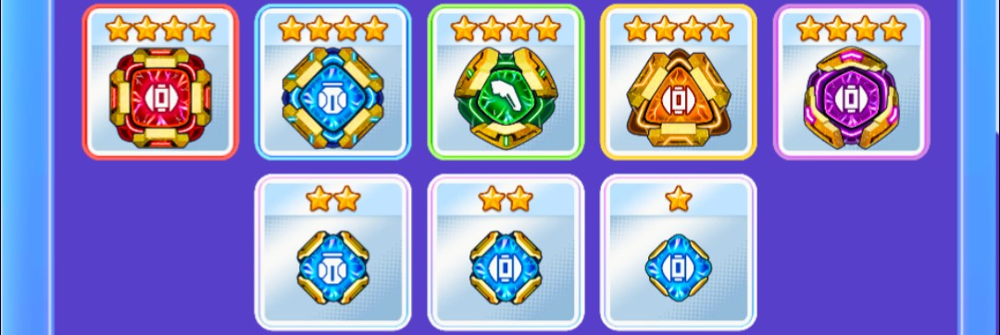
・🟥赤コア→☆4RロケットコアUR(ロケットUP)
・🟦青コア→☆4BナパームコアUR(青属性UP)
・🟩緑コア→☆4GブーメランコアUR(ブーメランUP)
・🟨黄コア→☆4YロケットコアUR(ロケットUP)
・🟪紫コア→☆4PロケットコアUR(ロケットUP)
・⬜自由枠コア→☆2BナパームコアSSR(青属性UP)
・⬜自由枠コア→☆2BロケットコアSSR(青属性UP)
・⬜自由枠コア→☆1BロケットコアSR(青属性UP)
コア入れ替え候補
・🟥赤コア→ロケットUPのコア
・🟦青コア→青属性UPのコア
・🟩緑コア→ボム系UPのコア
・🟨黄コア→ロケットUPのコア
・🟪紫コア→ロケットUPコア
・⬜自由枠コア→青属性UPのコア
・⬜自由枠コア→青属性UPのコア
・⬜自由枠コア→青属性UPのコア
リンクカード
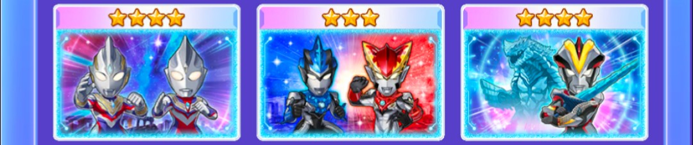
・『ウルトラマンR/B(ルーブ)』(ロッソ&ブル)
・採用キャラに準じる
ウルトラメカ
・優先順位1 青属性強化
・優先順位2 ロケット
立ち回り
このパーティの戦略としてはブルの必殺技を使った後に高火力を叩き込むことを目的としたパーティです。
ブルの必殺技をピッケルで発動することでピッケル使ったターンとその次のターンが青属性になるので
そのタイミングでバトルアイテム使ってもすべて青属性での攻撃判定なのでオススメです。
1.ブルをピッケル
2.バトルアイテムで盤面整える
3.コンビネーション攻撃
ブルの必殺技が貯まっていない場合、アグルの必殺技で青ピースを消して貯めるのもオススメ。
ガンQ編/ロケット編
攻略のポイント
ガンQはサークルやロケットのダメージ補正がかなりついています
ロケットステータスをあげて攻めるのが良さそうです
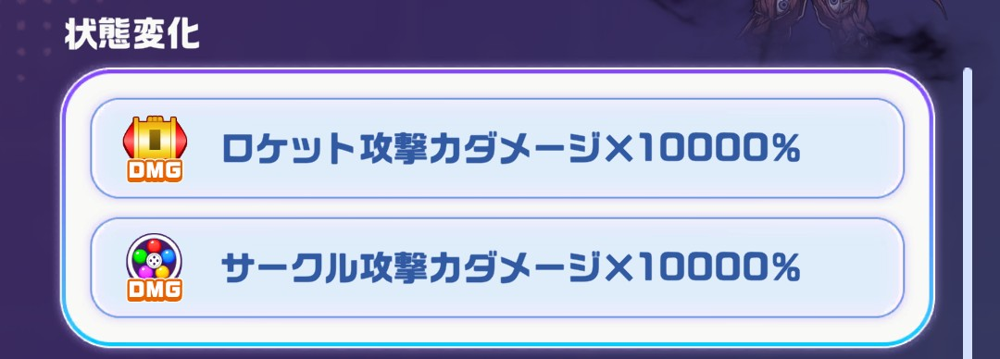
確定サークル
オススメパーティ
キャラ
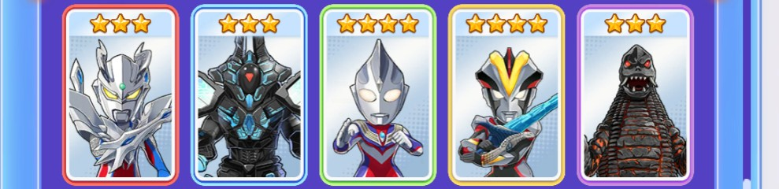
・🟥赤キャラ→ウルティメイトゼロ
・🟦青キャラ→テラフェイザー
・🟩緑キャラ→ウルトラマンティガ(マルチタイプ)
・🟨黄キャラ→ウルトラマンビクトリー(シェパードンセイバー)
・🟪紫キャラ→EXレッドキング
キャラ入れ替え候補
・ウルティメイトゼロ→ジャック、オメガ(ガメドンアーマー)
・テラフェイザー→ババルウ、カルミラ、タイラント、ウインダム
・ウルトラマンティガ→なし
・ウルトラマンビクトリー→ジャック、オメガ(ガメドンアーマー)
・EXレッドキング→ババルウ、カルミラ、タイラント、ウインダム
コア
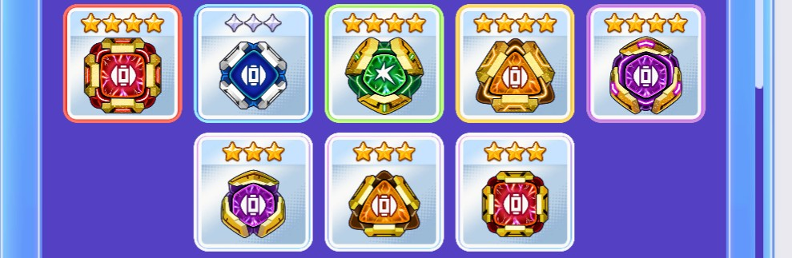
・🟥赤コア→☆4RロケットコアUR(ロケットUP)
・🟦青コア→◇3BロケットコアR(ロケットUP)
・🟩緑コア→強化値高ければ何でも可
・🟨黄コア→☆4YロケットコアUR(ロケットUP)
・🟪紫コア→☆4PロケットコアUR(ロケットUP)
・⬜自由枠コア→☆3PロケットコアLR(ロケットUP)
・⬜自由枠コア→☆3RロケットコアLR(ロケットUP)
・⬜自由枠コア→☆3YロケットコアLR(ロケットUP)
コア入れ替え候補
・🟥赤コア→サークルUPのコア
・🟦青コア→サークルUPのコア
・🟩緑コア→強化値高ければ何でも可
・🟨黄コア→サークルUPのコア
・🟪紫コア→ロケットUPコア
・⬜自由枠コア→ロケットUPのコア
・⬜自由枠コア→ロケットUPのコア
・⬜自由枠コア→ロケットUPのコア
リンクカード
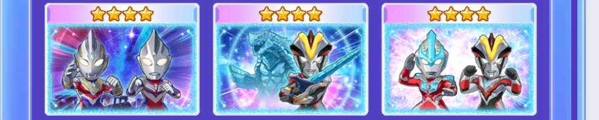
・『ウルトラマンギンガS』(ビクトリー&シェパードン)
・採用キャラに準じる
ウルトラメカ
・優先順位1 ロケット
・優先順位2 サークル
立ち回り
このパーティの戦略としてはロケットでの攻撃を主軸として攻撃します。
チャンスカードの倍率に合わせてサークル×ロケットが発動させる事がスコア伸ばす秘訣です。